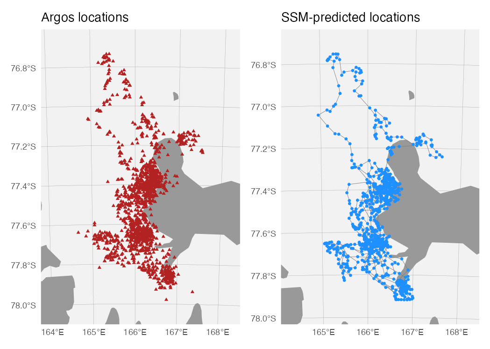
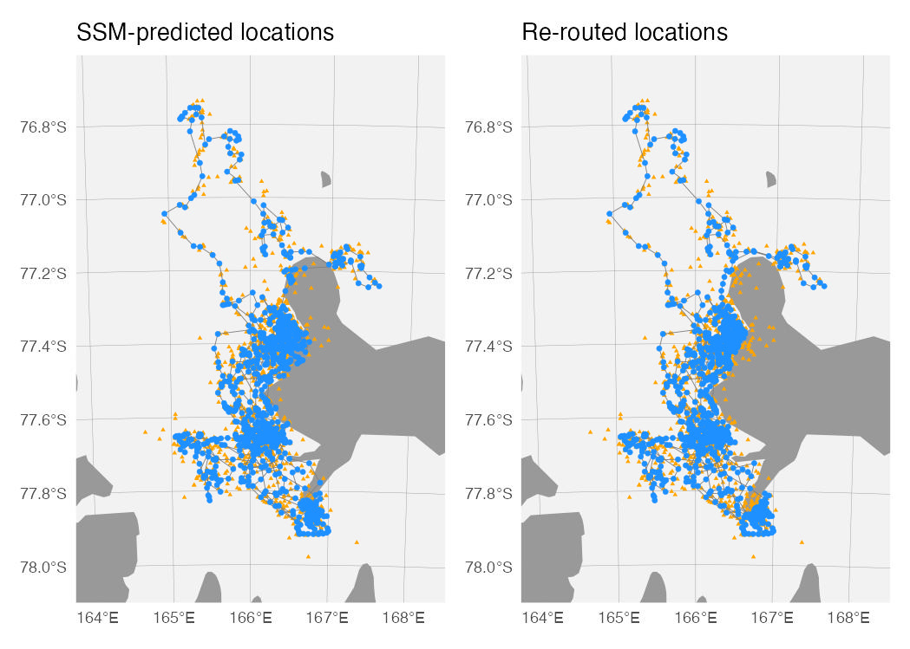

When fitting SSM’s to error-prone tracking data, estimated locations can occur in places where animals are known to not travel. Marine animal tracks traversing land masses, while not impossible for animals that haulout periodically or depart from and return to a breeding colony, are an obvious issue that is computationally difficult to address within the SSM optimization. In this case, a pragmatic solution would apply a post-hoc adjustment of locations occurring on land.
Here’s an example using a Weddell seal track from Scott Base, Antarctica. Note the numerous Argos locations (red) and SSM_predicted locations (blue) on land/fast-ice.
# fit SSM to Weddell seal Argos data
fit <- fit_ssm(wese_sb,
vmax = 3,
model = "mp",
time.step = 2,
control = ssm_control(verbose = 0))
# map the Argos locations
aes <- aes_lst(est=FALSE, obs=TRUE, conf=FALSE, mp=FALSE)
aes$df$col[4] <- "firebrick"
aes$df$size[4] <- 1.25
m1 <- map(fit,
what = "p",
aes = aes,
silent=TRUE,
crs = "+proj=stere +lon_0=166 +datum=WGS84 +units=km",
ext.rng = c(0.3,0.1))
# map the SSM-predicted locations
aes <- aes_lst(obs=FALSE, conf=FALSE, mp=FALSE, line=TRUE)
m2 <- map(fit,
what = "p",
aes = aes,
silent=TRUE,
crs = "+proj=stere +lon_0=166 +datum=WGS84 +units=km",
ext.rng = c(0.3,0.1))
(m1 + labs(title = "Argos locations") | m2 + labs(title = "SSM-predicted locations")) &
theme(panel.grid= element_line (size=0.1, colour="grey60"))
route_path()
Thanks to the pathroutr R package (https://jmlondon.github.io/pathroutr/), we can quickly and objectively re-route estimated tracks off of land. route_path() is a wrapper function for the pathroutr package, which must be installed separately (via install.packages("pathroutr", repos = "https://jmlondon.r-universe.dev")). Our implementation is intended to be easy to use and integrate into a foieGras workflow, but for complicated re-routing problems we recommend using the pathroutr functions directly.
Here we take the SSM fit object and pass the re-routed locations back to it.
fit <- route_path(fit,
what = "predicted",
map_scale = 10,
buffer = 10000)We can then map these locations to see the improvement.
my.aes <- aes_lst(line = TRUE,
conf = FALSE,
mp = FALSE,
obs = TRUE)
m1 <- map(fit,
what = "predicted",
aes = my.aes,
crs = "+proj=stere +lon_0=166 +datum=WGS84 +units=km",
ext.rng = c(0.3, 0.1),
silent = TRUE)
m2 <- map(fit,
what = "rerouted",
aes = my.aes,
crs = "+proj=stere +lon_0=166 +datum=WGS84 +units=km",
ext.rng = c(0.3, 0.1),
silent = TRUE)
(m1 + labs(title = "SSM-predicted locations") | m2 + labs(title = "Re-routed locations")) &
theme(panel.grid= element_line (size=0.1, colour="grey60"))